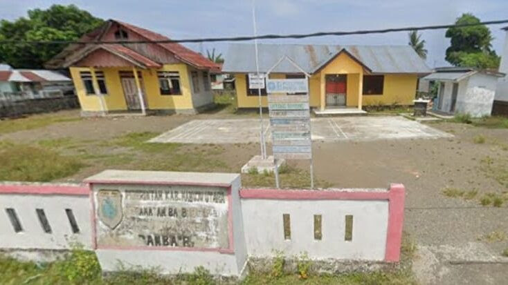

Sejarah Desa Bambaira
Desa Bambaira terletak di bagian Barat Sulawesi pada tahun 1960 pada masa itu pulau sulawesi terdapat tiga provinsi yakni provinsi Sulawesi Selatan, Sulawesi Tengah dan Sulawesi Utara pada saat itu pula provinsi Sulawesi Barat diperjuangkan namun pada tahun 1963, pemerintah pusat hanya menerima pembentukan provinsi Sulawesi Tenggara sedangkan usulan pembentukan provinsi Sulawesi Barat tidak disetujui oleh pemerintah pusat. Pada tahun 1970 Desa Sarude, Desa Balabonda, Desa Ietawa, Desa Maponu, Desa Tampaure dan Desa Kalukunangka masih satu induk desa, yakni Desa Bambaira. Pada saat itu ibukotanya berada di Ujung Pandang yang sekarang dikenal dengan nama Kota Makassar.
Perjuangan pembentukan Provinsi Sulawesi Barat menemukan momentumnya pada tahun 1999 pasca gerakan reformasi pembentukan Provinsi baru di Indonesia. Perjuangan panjang pembentukan Provinsi Sulawesi Barat akhirnya terwujud melalui upaya rakyat Sulawesi Barat didukung oleh anggota DPR RI melalui Hak Asasi Anggota DPR RI Tentang UU Pembentukan Daerah Otonomi Baru, tanggal 5 Oktober 2004 provinsi Sulawesi Barat resmi terbentuk berdasarkan Undang-Undang No. 26 Tahun 2004, yang sebelumnya terlebih dahulu Kabupaten Mamuju Utara dimekarkan pada tahun 2003 berdasarkan Undang-Undang No. 07 tahun 2003 dan pada tahun 2017 berubah nama menjadi Kabupaten Pasangkayu berdasarkan Peraturan Pemerintah Nomor 61 tahun 2017
Pada saat pemekaran Sulawesi Barat dan Kabupaten Mamuju Utara, maka Desa Bambaira pun dimekarkan menjadi beberapa desa dan Desa Bambaira pun menjadi kota induk dari Kecamatan Bambaira Kabupaten Pasangkayu. Adapun Desa Bambaira memiliki versi menurut masyarakat, cikal bakal penamaan Desa Bambaira berdasarkan sejarah desa itu sendiri. Desa Bambaira berdiri pada tahun 1970 berkat prakarsa bapak Andi Rumana dan masyarakat setempat.
Sebelum terbentuk, desa ini awalnya bernama Tanjung Taipa karena di tepi laut terdapat pohon mangga yang berdiri tepat di atas tanjung. Kemudian ada sekelompok suku Kaili di daerah desa Bambaira tepatnya di Dusun Sibala, waktu itu belum dinamai Dusun Sibala dan yang masuk ke pemukiman tersebut untuk tinggal bercocok tanam dan pada saat itu pohon mangga yang hidup di tanjung tersebut tidak ada lagi. Jadi, masyarakat setempat sepakat untuk mengganti nama Desa Tanjung Taipa menjadi Desa Bambaira. Bambaira berasal dari bahasa kaili yang terdiri dari dua kata, Bamba artinya pintu dan Ira/Lawira artinya daun keladin, yang berarti pintu sungai yang disekitarnya banyak tumbuhan daun keladin karena di pinggir kamput tersebut terdapat sungai.
Daftar nama-nama kepala desa Bambaira yang pernah menjabat sebagai berikut:
| NO | NAMA | JABATAN | TAHUN | KET |
|---|---|---|---|---|
| 1 | Muh. Amin | Kepala Desa | Desa Defenitif | |
| 2 | Abyar Banon | Kepala Desa | Desa Defenitif | |
| 3 | Andi Subair | Kepala Desa | Desa Defenitif | |
| 4 | Sudding Tambung | Kepala Desa | Desa Defenitif | |
| 5 | Amirudin | Kepala Desa | Desa Defenitif | |
| 6 | H. Djafar | Kepala Desa | Desa Defenitif | |
| 7 | Baharullah | Kepala Desa | PJ Kepala Desa | |
| 8 | Saparuddin | Kepala Desa | PJ Kepala Desa | |
| 9 | Arsid | Kepala Desa | Desa Defenitif | |
| 10 | H. Safaruddin S.Sos | Kepala Desa | 2009-2017 | Desa Defenitif |
| 11 | Aris | Kepala Desa | 2018-2019 | PJ Kepala Desa |
| 12 | Rahmatullah | Kepala Desa | 2021-2026 | Desa Defenitif |